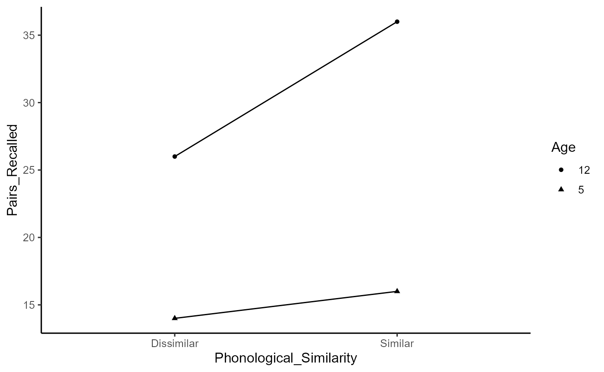

Lab10_NestedDesigns.Rmd
library(tidyverse)
#> -- Attaching packages --------------------------------------- tidyverse 1.3.1 --
#> v ggplot2 3.3.6 v purrr 0.3.4
#> v tibble 3.1.7 v dplyr 1.0.9
#> v tidyr 1.2.0 v stringr 1.4.0
#> v readr 2.1.2 v forcats 0.5.1
#> Warning: package 'ggplot2' was built under R version 4.1.3
#> Warning: package 'tibble' was built under R version 4.1.3
#> Warning: package 'dplyr' was built under R version 4.1.3
#> -- Conflicts ------------------------------------------ tidyverse_conflicts() --
#> x dplyr::filter() masks stats::filter()
#> x dplyr::lag() masks stats::lag()
bat_hat <- tribble(~Subjects, ~Age, ~Phonological_Similarity, ~Pairs_Recalled,
"s1", "5", "Similar", 15,
"s2", "5", "Similar", 23,
"s3", "5", "Similar", 12,
"s4", "5", "Similar", 16,
"s5", "5", "Similar", 14,
"s6", "12", "Similar", 39,
"s7", "12", "Similar", 31,
"s8", "12", "Similar", 40,
"s9", "12", "Similar", 32,
"s10", "12", "Similar", 38,
"s1", "5", "Dissimilar", 13,
"s2", "5", "Dissimilar", 19,
"s3", "5", "Dissimilar", 10,
"s4", "5", "Dissimilar", 16,
"s5", "5", "Dissimilar", 12,
"s6", "12", "Dissimilar", 29,
"s7", "12", "Dissimilar", 15,
"s8", "12", "Dissimilar", 30,
"s9", "12", "Dissimilar", 26,
"s10", "12", "Dissimilar", 30
)
bat_hat <- bat_hat %>%
mutate(Subjects = as.factor(Subjects),
Age = as.factor(Age),
Phonological_Similarity = as.factor(Phonological_Similarity))
aov_out <- aov(Pairs_Recalled ~ Age * Phonological_Similarity +
Error(Subjects/(Age*Phonological_Similarity)), bat_hat)
#> Warning in aov(Pairs_Recalled ~ Age * Phonological_Similarity + Error(Subjects/
#> (Age * : Error() model is singular
summary(aov_out)
#>
#> Error: Subjects
#> Df Sum Sq Mean Sq F value Pr(>F)
#> Age 1 1280 1280 32 0.000478 ***
#> Residuals 8 320 40
#> ---
#> Signif. codes: 0 '***' 0.001 '**' 0.01 '*' 0.05 '.' 0.1 ' ' 1
#>
#> Error: Subjects:Phonological_Similarity
#> Df Sum Sq Mean Sq F value Pr(>F)
#> Phonological_Similarity 1 180 180 45 0.000151 ***
#> Age:Phonological_Similarity 1 80 80 20 0.002077 **
#> Residuals 8 32 4
#> ---
#> Signif. codes: 0 '***' 0.001 '**' 0.01 '*' 0.05 '.' 0.1 ' ' 1
ggplot(bat_hat, aes(x = Phonological_Similarity,
y = Pairs_Recalled,
shape = Age,
group = Age))+
geom_point(stat = "summary", fun = "mean")+
geom_line(stat = "summary", fun = "mean")+
theme_classic(base_size = 12)
faces_spaces <- tribble(~Subjects, ~Typicality, ~Faces, ~RT,
"s1", "Typical", "A1", 20,
"s2", "Typical", "A1", 9,
"s3", "Typical", "A1", 18,
"s4", "Typical", "A1", 5,
"s1", "Typical", "A2", 22,
"s2", "Typical", "A2", 8,
"s3", "Typical", "A2", 20,
"s4", "Typical", "A2", 14,
"s1", "Typical", "A3", 25,
"s2", "Typical", "A3", 21,
"s3", "Typical", "A3", 18,
"s4", "Typical", "A3", 16,
"s1", "Typical", "A4", 24,
"s2", "Typical", "A4", 21,
"s3", "Typical", "A4", 21,
"s4", "Typical", "A4", 22,
"s1", "Typical", "A5", 19,
"s2", "Typical", "A5", 21,
"s3", "Typical", "A5", 33,
"s4", "Typical", "A5", 23,
"s1", "Atypical", "A1", 37,
"s2", "Atypical", "A1", 34,
"s3", "Atypical", "A1", 35,
"s4", "Atypical", "A1", 38,
"s1", "Atypical", "A2", 37,
"s2", "Atypical", "A2", 35,
"s3", "Atypical", "A2", 39,
"s4", "Atypical", "A2", 49,
"s1", "Atypical", "A3", 43,
"s2", "Atypical", "A3", 35,
"s3", "Atypical", "A3", 39,
"s4", "Atypical", "A3", 51,
"s1", "Atypical", "A4", 48,
"s2", "Atypical", "A4", 37,
"s3", "Atypical", "A4", 37,
"s4", "Atypical", "A5", 50,
"s1", "Atypical", "A5", 45,
"s2", "Atypical", "A5", 39,
"s3", "Atypical", "A5", 40,
"s4", "Atypical", "A5", 52,
)
faces_spaces <- faces_spaces %>%
mutate(Subjects = as.factor(Subjects),
Typicality = as.factor(Typicality),
Faces = as.factor(Faces))
aov_out <- aov(RT ~ Typicality * Faces +
Error(Subjects/(Typicality*Faces)), faces_spaces)
#> Warning in aov(RT ~ Typicality * Faces + Error(Subjects/(Typicality * Faces)), :
#> Error() model is singular
summary(aov_out)
#>
#> Error: Subjects
#> Df Sum Sq Mean Sq F value Pr(>F)
#> Faces 1 53.33 53.33 0.571 0.529
#> Residuals 2 186.67 93.33
#>
#> Error: Subjects:Typicality
#> Df Sum Sq Mean Sq F value Pr(>F)
#> Typicality 1 4840 4840 363 0.00274 **
#> Faces 1 333 333 25 0.03775 *
#> Residuals 2 27 13
#> ---
#> Signif. codes: 0 '***' 0.001 '**' 0.01 '*' 0.05 '.' 0.1 ' ' 1
#>
#> Error: Subjects:Faces
#> Df Sum Sq Mean Sq F value Pr(>F)
#> Faces 4 457.0 114.25 6.721 0.00681 **
#> Typicality:Faces 2 23.2 11.58 0.681 0.52807
#> Residuals 10 170.0 17.00
#> ---
#> Signif. codes: 0 '***' 0.001 '**' 0.01 '*' 0.05 '.' 0.1 ' ' 1
#>
#> Error: Subjects:Typicality:Faces
#> Df Sum Sq Mean Sq F value Pr(>F)
#> Typicality:Faces 4 22.54 5.634 0.375 0.822
#> Residuals 11 165.31 15.028
#>
#> Error: Within
#> Df Sum Sq Mean Sq F value Pr(>F)
#> Residuals 1 2 2
### It's apparent that I'm doing something incorrectly as my results are not matching up with the textbook's. I'm also pretty confused trying to find the correct mean square values to compute the quasi-F out of. I can only hope that the effort counts for something and the analyses that did come out of this aren't totally meaningless. It seems likely that I'm failing to convey the message to R that these factors are nested in a certain way. However, I really, really am not sure how I'd do so... It's therefore somewhat unfortunate there's no solutions video or what not I could get guidance from, but that may reflect in the strategy I did ultimately attempt here.
library(DBSStats2SemesterProject)